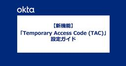
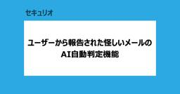
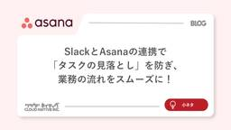

CloudNative Inc. BLOGs
https://blog.cloudnative.co.jp
株式会社クラウドネイティブのブログ。情報システムに関するマニアックな記事から、ちょっと変わった？ 社風までざっくばらんにご紹介。
フィード

【Okta新機能】「Temporary Access Code (TAC)」設定ガイド
CloudNative Inc. BLOGs
ごきげんよう、IDチームのわかなです！ 今回は、Oktaで「Temporary Access Code（TAC）」機能が提供されたので、検証しました！ 「Temporary Access Code（TAC）」とは？ Ok […]
1日前

セキュリオ新機能：ユーザーから報告された怪しいメールのAI自動判定機能
CloudNative Inc. BLOGs
セキュリティチームのばーちゃんです！ 本ブログでは、セキュリオの新機能「AI自動判定機能」を紹介します。 はじめに 本題に入る前に、少しだけ前置きをします。 近年、AIによって巧妙化・大量生産されるフィッシングメールは、 […]
2日前

SlackとAsanaの連携で「タスクの見落とし」を防ぎ、業務の流れをスムーズに！
CloudNative Inc. BLOGs
📝 このブログの3行まとめ はじめに 皆さんのチームでは、こんな悩みはありませんか？ 実は私も、以前は同じ悩みを抱えていました。弊社ではたくさんのツールを使っていて、最初は「ツールが多すぎて使いこなせない！」と困っていた […]
4日前

BTCON2025に参加してきました！
CloudNative Inc. BLOGs
お世話になっております。CloudNative 営業担当 伊藤でございます。この度、2025年11月15日に開催された「BTCON2025」に参加させていただきました。 BTCON2025とは？ - ビジネスを加速させる […]
10日前
【重要】Okta Workflows Starterプラン（無償5フロー）の利用上限に関するお知らせ
CloudNative Inc. BLOGs
ごきげんよう、IDチームのわかなです！ 今回は、Okta WorkflowsをStarterプラン（無償5フロー）でご利用中の皆様にとって、非常に重要な仕様変更に関するお知らせです。 これまで無償プランでは実質的にステッ […]
18日前
「ゴミを入れれば、ゴミしか出てこない問題」にAIエージェントと立ち向かう
CloudNative Inc. BLOGs
ID/Dev/AIチームの前田です。最近KODAK CHARMERAというデジカメを入手しました。いい感じの写真が取れるんですが、スペック的には使いどころがなかなか難しく、ユースケースを探り中です。 今回は先日Box J […]
24日前
【Okta小技】「全社アサイン、でも表示は一部門だけ」アプリ表示を分離するBookmark App活用術
CloudNative Inc. BLOGs
ごきげんよう、IDチームのわかなです！ Oktaを運用していると、「このアプリ、ライセンス管理のために全社にアサインしてるけど、ダッシュボードに表示したいのは一部の部門だけなんだよな…」と思ったことはありませんか？ 全員 […]
1ヶ月前
【Netskope】Advanced Analyticsで特定のカテゴリに対する閲覧状況を可視化してみよう！
CloudNative Inc. BLOGs
こんにちは、セキュリティチームの佐藤です。 特定のウェブサイトカテゴリに対して一律でポリシー制御を適用する前に、一度ユーザーの閲覧状況を把握したいなと思うことはありませんか？「特定のカテゴリに対してアクションをアラートに […]
1ヶ月前
eラーニング配信方法が「カリキュラム」に一本化されました
CloudNative Inc. BLOGs
セキュリティチームのばーちゃんです！ 本ブログでは、セキュリオのeラーニング配信方法のアップデート（機能統合）をお伝えします！ 主な変更点は、従来の「レッスン」単体での配信機能が廃止され、複数の教材をまとめて管理・配信で […]
1ヶ月前
Microsoft PurviewのエンドポイントDLPで機密になるメールアドレスを検出してみた
CloudNative Inc. BLOGs
こんにちは、臼田です。 みなさん、DLPしてますか？(挨拶 今回は全てではなく一部のメールアドレスをMicrosoft PurviewのエンドポイントDLPで検出してみます。 背景 メールアドレスが記述されたファイルを機 […]
1ヶ月前